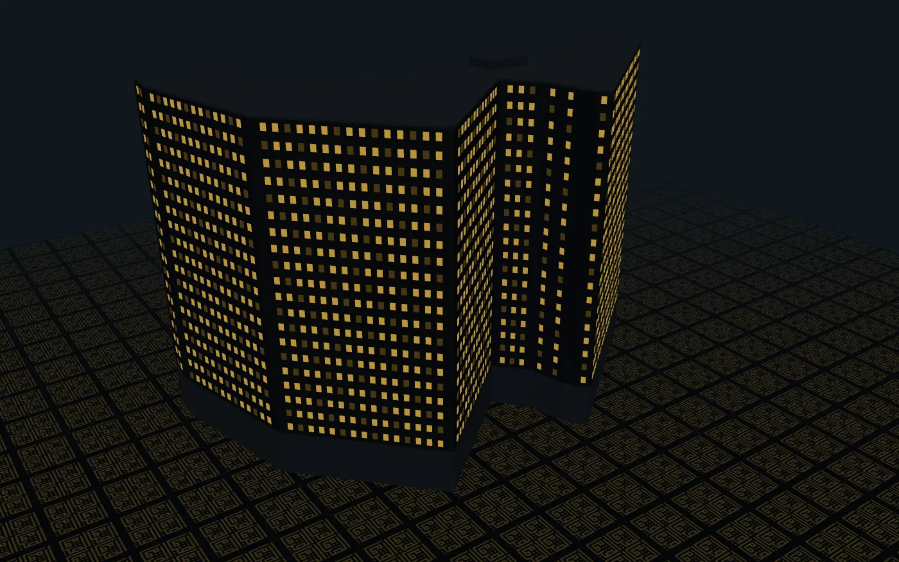

صفحة تطويرDevelopment page — معاينة مكوّن المبنى ثلاثي الأبعاد قبل وضعه في صفحة الفندق (المرحلة 6). غير مفهرسة.— preview of the 3D building component before it is placed on the hotel page (Phase 6). Not indexed.
فندق تاج باركTaj Park Hotel
نموذج إجرائي للمبنى — يدور مع التمريرProcedural building model — orbits with scroll
مرّر للأسفل لتدوير الكاميرا. الوضع الداكن يضيء النوافذ بالذهب. اسحب داخل المشهد لتدوير محدود. يظهر الملصق الثابت عند تفعيل تقليل الحركة أو غياب WebGL أو وضع توفير البيانات.Scroll down to orbit the camera. Dark mode lights the windows in gold. Drag inside the scene for a limited manual orbit. The static poster is shown under reduced motion, without WebGL, or with Save-Data on.


مخطط المبنى © مساهمو OpenStreetMap (ODbL)Building outline © OpenStreetMap contributors (ODbL)
—مللي ثانية حتى أول إطارms to first frame
—متوسط مللي ثانية/إطارavg ms / frame
—حالة المكوّنcomponent state